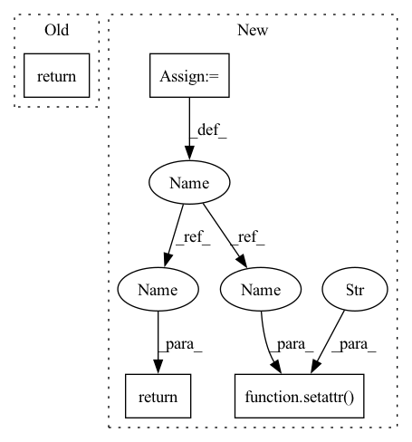

Pattern ID :33928

Before Change
return None
run_results_cls = etau.get_class(d["cls"])
return run_results_cls._from_dict(d, samples, config)
@classmethod
def _from_dict(cls, d, samples, config):
After Change
return None
run_results_cls = etau.get_class(d["cls"])
run_results = run_results_cls._from_dict(d, samples, config)
// @todo formalize this
setattr(run_results, "_run_key", key)
return run_results
@classmethod
def _from_dict(cls, d, samples, config):
Subclass implementation of :meth:`from_dict`.
In pattern: SUPERPATTERN
Frequency: 3
Non-data size: 4
Instances
Fragment ID: 97190131
Project Name: voxel51/fiftyone
Commit Name: 6e1551ded5d77fa49266304a9c7eaaae03e60a25
Time: 2023-02-27
Author: brimoor@umich.edu
File Name: fiftyone/core/runs.py
M Class Name: RunResults
N Class Name: RunResults
M Method Name: from_dict(5)
N Method Name: from_dict(4)
M Parent Class: etas.Serializable
N Parent Class: etas.Serializable
M File Name: fiftyone/core/runs.py
N File Name: fiftyone/core/runs.py
M Start Line: 667
M End Line: 667
N Start Line: 681
N End Line: 703
'>
Before Change
if drop_bad_windows:
mne_epochs.drop_bad()
return WindowsDataset(mne_epochs, ds.description)
def _create_fixed_length_windows(
After Change
if drop_bad_windows:
mne_epochs.drop_bad()
windows_ds = WindowsDataset(mne_epochs, ds.description)
// add window_kwargs and raw_preproc_kwargs to windows dataset
setattr(windows_ds, "window_kwargs", window_kwargs)
kwargs_name = "raw_preproc_kwargs"
if hasattr(ds, kwargs_name):
setattr(windows_ds, kwargs_name, getattr(ds, kwargs_name))
return windows_ds
def _create_fixed_length_windows(
'>
Fragment ID: 97190134
Project Name: braindecode/braindecode
Commit Name: a436f25936c64f32787ba76405d6b15085f28eeb
Time: 2021-08-09
Author: gemeinl@users.noreply.github.com
File Name: braindecode/preprocessing/windowers.py
M Class Name: AnonimousClass
N Class Name: AnonimousClass
M Method Name: _create_windows_from_events(15)
N Method Name: _create_windows_from_events(15)
M Parent Class:
N Parent Class:
M File Name: braindecode/preprocessing/windowers.py
N File Name: braindecode/preprocessing/windowers.py
M Start Line: 315
M End Line: 324
N Start Line: 226
N End Line: 312
'>
Before Change
if drop_bad_windows:
mne_epochs.drop_bad()
return WindowsDataset(mne_epochs, ds.description)
def _compute_window_inds(
After Change
if drop_bad_windows:
mne_epochs.drop_bad()
windows_ds = WindowsDataset(mne_epochs, ds.description)
// add window_kwargs and raw_preproc_kwargs to windows dataset
setattr(windows_ds, "window_kwargs", window_kwargs)
kwargs_name = "raw_preproc_kwargs"
if hasattr(ds, kwargs_name):
setattr(windows_ds, kwargs_name, getattr(ds, kwargs_name))
return windows_ds
def _compute_window_inds(
'>
Fragment ID: 97190132
Project Name: braindecode/braindecode
Commit Name: a436f25936c64f32787ba76405d6b15085f28eeb
Time: 2021-08-09
Author: gemeinl@users.noreply.github.com
File Name: braindecode/preprocessing/windowers.py
M Class Name: AnonimousClass
N Class Name: AnonimousClass
M Method Name: _create_fixed_length_windows(13)
N Method Name: _create_fixed_length_windows(13)
M Parent Class:
N Parent Class:
M File Name: braindecode/preprocessing/windowers.py
N File Name: braindecode/preprocessing/windowers.py
M Start Line: 385
M End Line: 394
N Start Line: 335
N End Line: 392